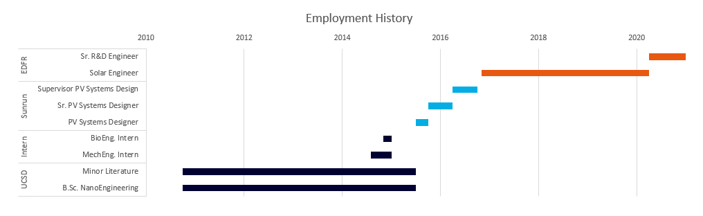
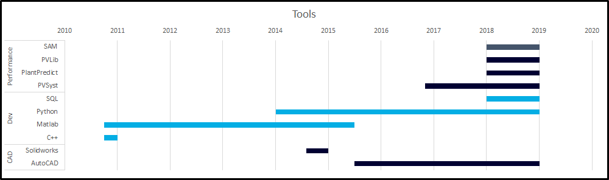

Kurt Rhee (Simon Kurtis Rhee II)
- Solar Engineer and Python Programmer focusing on performance modeling, data science, algorithms and automation.
- About Me
Employment History & Skillsets


Projects of Interest
Engineering
| Project | Description |
|---|---|
| Bluemex | 90 MWac, Sonora, MEX |
| Desert Harvest | 150 MWac, California, USA |
| Maverick | 500 MWac, California, USA |
| Various Residential | 1 MWac, USA |
Automation
| Project | Description |
|---|---|
| AutoLayout | Automated Grid Scale PV Layout and CAPEX quantities via Spectral Clustering and Novel Cluster Equalization Algorithm |
| Bifacial Test Facility | Automated Filtering, Analysis, and Reporting for Bifacial Test Site |
| Energy Production Estimate | Automation of Preliminary Plant Design, PVSyst Post-Processing, Batch and Data Visualization |
| Soiling Estimate Tool | Monte Carlo Based Simulation of Grid Scale Soiling and Cleaning Scenarios |
Data Science
| Project | Description |
|---|---|
| Hourly Variability of PV Performance | Variability of Grid Scale PV Plant Performance by Month-Hour via Kernel Density Estimation |
| KSI Measure Correlate Predict | Correlation/Prediction of Satellite Solar Resource with Ground Sensors via Kolomogorov-Smirnoff Index Fit |
| PV + Storage Optimization | Convex Optimization of Grid Scale PV+Storage Plant Charge/Discharge via Linear Programming Methods |